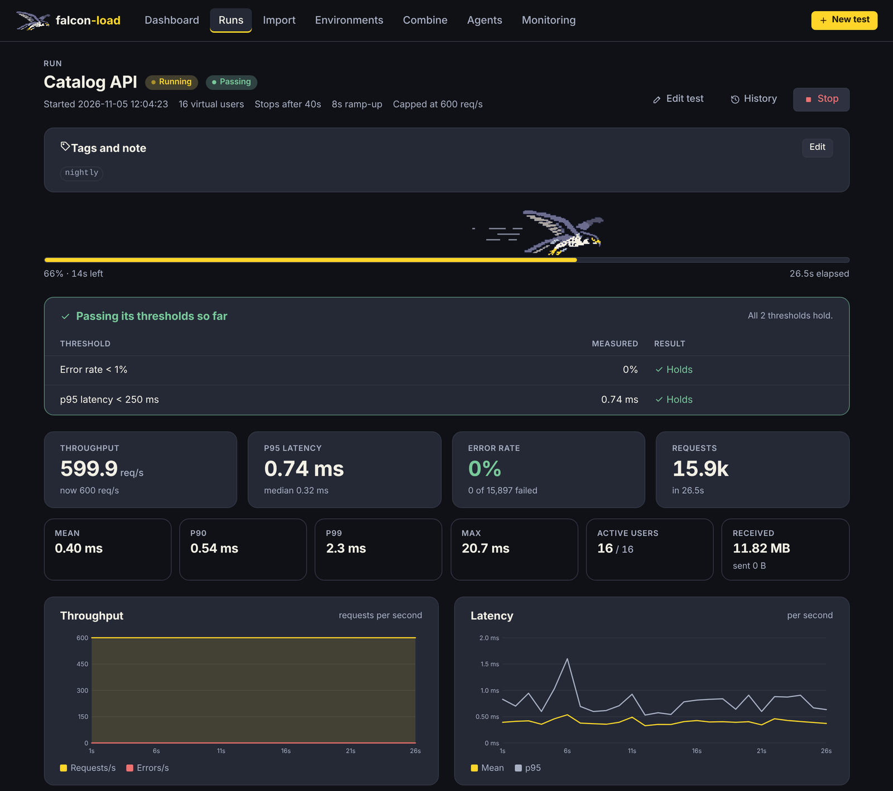
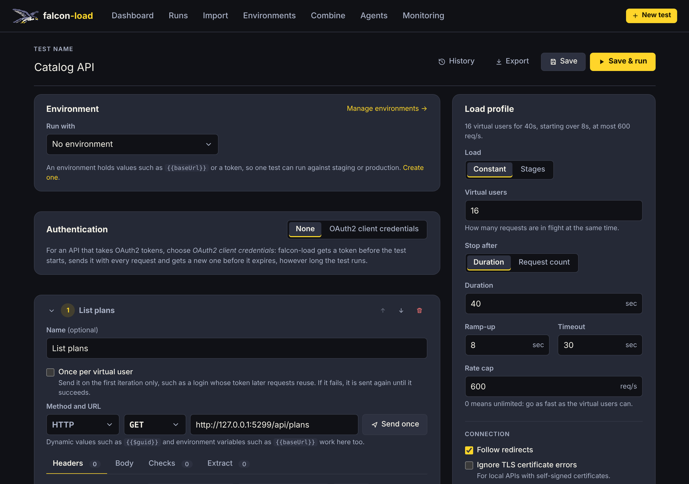

Load test your API and watch it hold up, live
falcon-load is an open source load tester with a web UI. Configure the HTTP, GraphQL, WebSocket or gRPC requests to send, choose how hard and for how long, then watch throughput, latency percentiles, status codes and errors update every second.

A test running at its 600 req/s cap, checked against its pass/fail thresholds as it goes.
Everything a load test needs
One tool for the quick "can it take 500 requests a second?" check and the nightly soak test in CI. The README has the full list.
Live results
Throughput, error rate and latency (mean, p50, p90, p95, p99, max) per second and per request, with status codes and errors as they happen.
HTTP, GraphQL, WebSocket and gRPC
Write a request, press "Send once" to check the response, then load test it. gRPC methods come straight from your .proto files.
Realistic scenarios
Multi-step requests, dynamic values like {{$guid}}, CSV or JSON data files, and values extracted from one response into the next, such as a login token.
Load shapes
Constant virtual users with ramp-up and a requests-per-second cap, or stages: step, spike and soak templates, or your own.
Checks and thresholds
Expected status codes, body and JSON checks per request, and pass/fail thresholds for the run such as p95 < 500 ms or error rate < 1%.
Environments and secrets
Run the same test against staging and production. Secret values stay hidden in the app, in error samples and in exports. OAuth2 client credentials built in.
History and baselines
Every run of a saved test is kept with trend charts. Mark a baseline and see regressions in red, or compare any two runs side by side.
More load from more machines
Drive several falcon-load agents from one controller, or combine exported results, and watch live metrics in Grafana via Prometheus, InfluxDB or OpenTelemetry.
Built for CI
A command line runner with clear exit codes, HTML, JUnit and Markdown reports, a GitHub Action and an Azure Pipelines template that comment on pull requests.
Build a test in the browser
The editor checks every request and setting as you type and tells you what is wrong next to it. Import requests from a curl command, a Postman collection or an OpenAPI spec, and export a test as JSON to run it from the command line or share it.
Read the full documentation
Quick start
falcon-load runs on your own machine. Build it with Docker, or with the .NET 10 SDK.
Run the web app with Docker
git clone https://github.com/Moonwalker1307/falcon-load.git
cd falcon-load
docker build -t falcon-load .
docker run --rm -p 127.0.0.1:5299:8080 -v falcon-load-data:/data falcon-loadThen open http://localhost:5299. Saved tests live in the falcon-load-data volume. To test an API on your own machine from inside the container, use host.docker.internal.
Or with the .NET 10 SDK
dotnet run --project src/FalconLoad.WebRun an exported test in CI
# Fails the build (exit code 1) when a threshold isn't met.
dotnet run --project src/FalconLoad.Cli -- run tests.json --html report.html --junit results.xmlOr use the GitHub Action and Azure Pipelines template.